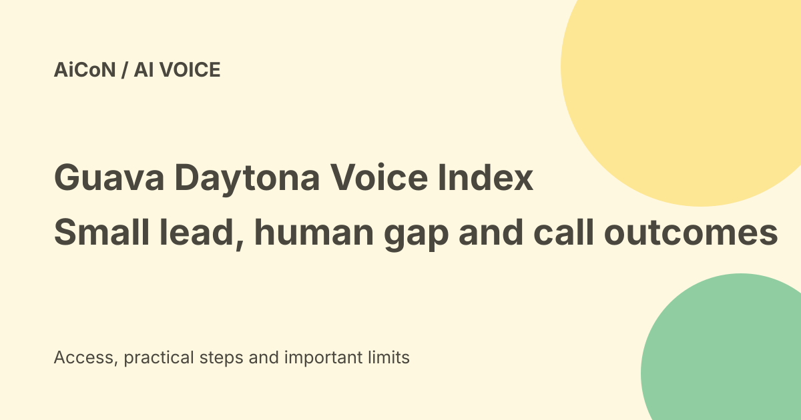

Guava Daytona: reading the Voice Index beyond first place
Guava’s September 2026 Voice Index puts Daytona first among four tested voice-agent systems at 58.88 out of 100. The company also publishes where it loses. This is a vendor-operated comparison, not proof that Daytona beats humans or every voice system on every call.

What was measured?
The index combines five pillars and twelve metrics: responsiveness, conversational flow, fidelity, resolution and text-to-speech quality. Content carries sixty percent of the score and voice experience forty percent.
A composite score adds different results using chosen weights. It is useful for comparison, but changing those weights can change the ranking.
The September scores
The published table gives Daytona 58.88, ElevenLabs with GPT 5.4 57.11, Grok Think Fast 1.0 with Grok STT 53.60, and ElevenLabs with Claude Haiku 4.5 51.06.
First and second differ by only 1.77 points. No system reaches sixty. The score is not a percentage of all customer calls completed correctly.
Where Daytona leads
The listed results put Daytona ahead on responsiveness, fidelity and text-to-speech quality. Fidelity asks whether the agent's answers are supported by the supplied source material.
The published fidelity value is 25.2 of thirty available points. That is not a promise that the agent cannot invent facts in another environment.
Where other systems lead
ElevenLabs with GPT 5.4 scores 23.7 of thirty on resolution, compared with Daytona's 20.1. Resolution asks whether the caller's reason for calling was handled end to end.
Grok leads conversational flow at 8.3 of fifteen, ahead of Daytona's 7.7. An overall winner can still be the weaker choice for the particular part of a call you care about most.
The human comparison
The blind listening tests report that evaluators preferred human agents in ninety-one percent of response-timing comparisons and ninety-three percent of interruption-recovery comparisons across all four systems.
Those figures are not Daytona-only failure rates or the share of all possible calls lost by an AI. The dialogue-fit comparison is much closer: humans were preferred in fifty-five percent.
Speech quality still has room
Daytona earns 1.7 of fifteen available text-to-speech quality points in the displayed table. The best competing system reaches 1.1.
Being first in that table does not mean natural speech is solved. Listen to pauses, repairs, interruptions and pronunciation in your own real call conditions.
Who runs the index?
Guava publishes the index and competes in it. Its page says so plainly and notes that a different weighting could change the top order.
The method uses automated components from EVA-Bench and Coval alongside a blind human panel with at least ten evaluators per pair. Those ingredients do not make the final vendor-run index an independently replicated test.
Can anyone reproduce it?
Guava says the automated portion can be reproduced from its published methodology. The human portion depends on a commissioned evaluator panel and cannot be self-served in the same way.
Keep the tested model versions, call sets and evaluator protocol together. Comparing a newer model with an older published score can be misleading.
Access and free-versus-paid verdict
The launch release describes Daytona as available to Guava customers. The index page invites production voice-agent submissions and says scoring runs in batches rather than on demand.
No exact Daytona per-minute price, unlimited free plan or India-specific checkout total was established in the checked material. A start-for-free link does not prove free production calling or free benchmark evaluation.
A useful pilot for an Indian team
- Choose calls that match the actual job.
- Include relevant languages, names and local terms.
- Use approved recordings with consent and private details removed.
- Measure resolution as well as latency and voice quality.
- Test interruptions, noisy audio and escalation to a person.
- Inspect wrong answers and failed actions.
- Confirm calling costs, retention and approved integrations.
No customer recordings, live calls or paid evaluation were submitted for this guide.
What changed since the original post?
We replace the broad loses-to-humans headline with its exact meaning: timing and interruption preferences across the four tested systems. We add the small composite margin, resolution tradeoff and limits of a vendor-operated index.
Frequently asked questions
Is 58.88 a call-success rate?
No. It is a weighted benchmark score.
Does first place mean best for my calls?
No. Test the outcomes and languages your team needs.
Is the benchmark independent?
Guava operates and publishes it while competing in it.
Sources: Official Guava Voice Index and disclosure · Guava product website · Issuer launch release reproduced by Yahoo Finance. Checked 7 October 2026.